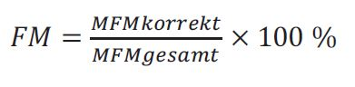

(Fundstelle: BAnz AT 29.10.2021 V2)
Qualitätsparameter für EETS-Anbieter
Vertragliche Bestimmungen zur Messung und Bewertung der einzelnen Qualitätsparameter (QP)
Inhaltsverzeichnis
- 1.
Vorbemerkungen
- 2.
Allgemeine Bestimmungen
- 3.
Bestimmungen zu den Qualitätsparametern
- 3.1
Erfassungsquote EQ_nonMED
- 3.1.1
Messdatenerhebung
- 3.1.2
Messdatenauswertung
- 3.2
Erfassungsquote EQ_MED
- 3.2.1
Messdatenerhebung
- 3.2.2
Messdatenauswertung
- 3.2.3
Kombinierte Erfassungsquote bei der Migration auf den MED
- 3.3
DSRC-Quote (QP_DSRCTRANS)
- 3.3.1
Messdatenerhebung und Messdatenauswertung
- 3.4
Sperrlistenquote (QP_SPERRLISTE)
- 3.4.1
Messdatenerhebung und Messdatenauswertung
- 3.5
Nutzerlistenquote (QP_NUTZERLISTE)
- 3.5.1
Messdatenerhebung und Messdatenauswertung
- 3.6
Quote für die abschnittsbezogenen Erhebungsdaten (QP_ABED)
- 3.7
Fahrspurquote (QP_FS)
- 3.8
Übermittlung von Mautbuchungsnachweisen
- 3.9
Übermittlung von Tagesberichten
- 4.
Bestimmungen zu den Audits
1. Vorbemerkung
Die folgenden Regelungen definieren vertragliche Bestimmungen für den Vertrag des Mauterhebers mit einem EETS-Anbieter hinsichtlich der Sicherstellung der Qualitätsanforderungen, die in den Gebietsvorgaben festgelegt wurden und das Leistungssoll beschreiben. Zur kontinuierlichen Überprüfung der Qualität des Systems des EETS-Anbieters werden täglich die Übertragung von Maut- und Auskehrdaten und die Einhaltung von Qualitätsparametern geprüft und ggf. auch Audits durchgeführt. Für EETS-Anbieter, die den vom nationalen Betreiber im Auftrag des Mauterhebers betriebenen Mauterhebungsdienst (MED) nutzen, gelten teilweise andere Qualitätsanforderungen als für EETS-Anbieter, die dies nicht tun. Auf diese Qualitätsanforderungen wird im Folgenden besonders hingewiesen.
2. Allgemeine Bestimmungen
- 1.
Der EETS-Anbieter hat dem Mauterheber jegliche Auskünfte in Zusammenhang mit den von ihm betriebenen Systemen zu erteilen, entsprechende Erklärungen und Berichte abzugeben und auf Aufforderung Dritte, die in die Zertifizierung oder den Betrieb der Qualitätssicherungs- und Qualitätsmanagementsysteme eingebunden sind, zum Beispiel weil sie Zertifizierungen durchführen, zur unbeschränkten, direkten Auskunft gegenüber dem Mauterheber und von ihm benannte Dritten zu verpflichten. Auf Aufforderung durch den Mauterheber hat der EETS-Anbieter Auditoren entsprechende – soweit aus Sicht des Mauterhebers erforderlich auch unbeschränkte – Einsicht in seine für die Erbringung der Leistung betriebenen Systeme, soweit diese zur Erfüllung der Gebietsvorgaben eingesetzt werden, zu gewähren.
- 2.
Der EETS-Anbieter erbringt gemäß seiner Verantwortlichkeit sein Leistungssoll qualitativ und quantitativ so vollständig, dass er die Erreichung der in diesem Vertrag vereinbarten Qualitätsanforderungen an die zu erbringende Leistung sicherstellt.
3. Bestimmungen zu den Qualitätsparametern
Die folgenden definierten Qualitätsparameter werden entsprechend dieser Anlage (Anlage 5 zum EETS-Zulassungsvertrag) berechnet und überwacht. In dieser Anlage und im EETS-Zulassungsvertrag § 27 „Vertragsstrafen“ und § 28 „Laufzeit und Beendigung des Vertrages“ werden konkret die Auswirkungen hinsichtlich der Erfüllung und Überschreitung bzw. Nicht-Erfüllung der Qualitätsparameter beschrieben und bestimmt.
Folgende Qualitätsparameter werden zur Überwachung der Erfüllung des Leistungssolls herangezogen.
3.1 Erfassungsquote EQ_nonMED
Die Erfassungsquote EQ_nonMED wird ausschließlich für EETS-Anbieter angewendet, die den Mauterhebungsdienst des Mauterhebers nicht nutzen.
Die Erfassungsquote EQ_nonMED dient der Bestimmung der Qualität der korrekten Erkennung befahrener Abschnitte des mautpflichtigen Straßennetzes.
Die Erfassungsquote EQ_nonMED berechnet sich wie folgt:
| EQ = 0,9 * FM + 0,1 * FS |
| mit |
| FM (Fremdauslesung mobil): DSRC-Auslesungen mit mobilen Kontrolleinrichtungen |
| FS (Fremdauslesung stationär): DSRC-Auslesungen mit ortsgebundenen (stationären) Kontrolleinrichtungen |
| |
| Für die Ermittlung der Teilquoten FM und FS gilt: |
|  |
| |
|
| |
| MFMkorrekt: Anzahl der in der Stichprobe mit mobilen Kontrollen erfassten korrekt vorgenommenen Mauterhebungen im automatischen Mauterhebungssystem. |
| |
| MFMgesamt: Anzahl der in der Stichprobe mit mobilen Kontrollen erfassten korrekt und nicht korrekt vorgenommenen Mauterhebungen im automatischen Mauterhebungssystem. |
| |
| MFSkorrekt: Anzahl der in der Stichprobe mit stationären Kontrollen erfassten korrekt vorgenommenen Mauterhebungen im automatischen Mauterhebungssystem. |
| |
| MFSgesamt: Anzahl der in der Stichprobe mit stationären Kontrollen erfassten korrekt und nicht korrekt vorgenommenen Mauterhebungen im automatischen Mauterhebungssystem. |
3.1.1 Messdatenerhebung
Die Datenerhebung erfolgt durch DSRC-Auslesung der in den kontrollierten Fahrzeugen angebrachten EETS-Fahrzeuggeräte. Die Stichprobe besteht aus allen mit einem EETS-Fahrzeuggerät ausgestatteten Fahrzeugen, bei denen eine DSRC-Auslesung erfolgreich durchgeführt wurde und bei denen ein mautpflichtiger Abschnitt durch den Mauterheber eindeutig bestimmt werden kann. Die Stichprobe besteht des Weiteren nur aus jenen Fahrzeugen, in denen das EETS-Fahrzeuggerät Erhebungsbereitschaft anzeigt. Die Ermittlung der Erfassungsquote EQ_nonMED erfolgt auf der Basis von Daten, die im Rahmen der Kontrolle im gesamten mautpflichtigen Streckennetz erhoben werden.
3.1.2 Messdatenauswertung
Eine Mauterhebung gilt als korrekt, wenn für das eindeutig identifizierbare Fahrzeug der in den abschnittsbezogenen Erhebungsdaten übermittelte erkannte Abschnitt dem aufgrund der DSRC-Daten der Kontrolleinrichtungen des Mauterhebers bestimmten tatsächlich befahrenen Abschnitt entspricht. Andernfalls gilt die Mauterhebung als nicht korrekt. Ausgenommen sind jeweils diejenigen Fälle, in denen der Mautpflichtige nachweislich gegen seine Mitwirkungspflicht verstoßen oder eine unerlaubte Manipulation vorgenommen hat. Die Beweislast dafür liegt beim EETS-Anbieter.
Die Erfassungsquote EQ_nonMED wird für jeden Kalendermonat durch den Mauterheber als Zwischenergebnis ermittelt und auf drei Stellen nach dem Komma kaufmännisch gerundet. Die Messdatenauswertung erfolgt durch den Mauterheber. Der Mauterheber stellt dem EETS-Anbieter spätestens 30 Tage nach Ende des Kalendermonats die ermittelte Erfassungsquote EQ_nonMED sowie Informationen und die zugrunde gelegten eigenen Daten zu identifizierten Schlechtfällen zur Verfügung. Der EETS-Anbieter kann diese Informationen und Daten prüfen und dem Mauterheber das Ergebnis seiner Prüfung sowie eventuelle Einwendungen innerhalb von 30 Tagen nach Übermittlung der Ergebnisse durch den Mauterheber übermitteln. Einwendungen gegen das vom Mauterheber übermittelte Ergebnis sind nur insoweit zulässig, als der EETS-Anbieter nachweist, dass die Ermittlung der Erfassungsquote EQ_nonMED entgegen den Vorgaben dieses Anhangs QP sowie ggf. der Verfahrensbeschreibung erfolgt ist oder die zugrunde gelegten eigenen Daten des Mauterhebers unrichtig sind. Der Mauterheber wird das Ergebnis der Prüfung durch den EETS-Anbieter innerhalb von weiteren 30 Tagen prüfen und die Erfassungsquote EQ_nonMED für den jeweiligen Kalendermonat endgültig feststellen und in Form eines Berichts übermitteln.
Basierend auf den Positionsdaten der Kontrolleinrichtung wird jedem erhobenen Messfall ein Abschnitt zugeordnet. Ist keine eindeutige Zuordnung zu einem Abschnitt möglich, dann wird der zugehörige Messfall verworfen.
Einem Gutfall für die Messung der Erfassungsquote EQ_nonMED muss eine korrekte Erhebung in allen folgenden Unterpunkten zugrunde liegen. Als Schlechtfall gilt jeder Fall, dem mindestens in einem der folgenden Unterpunkte keine korrekte Erhebung zugrunde liegt:
- 1.
Eine durch den EETS-Anbieter erhobene Maut gilt im Rahmen der Ermittlung der Erfassungsquote EQ_nonMED als korrekt erhoben, wenn die Höhe der tatsächlich erhobenen Maut der Höhe der geschuldeten Maut entspricht, die sich bei Anwendung der Regeln zur Ermittlung der Mauthöhe, unter Berücksichtigung der jeweiligen Gebührenklassen des kontrollierten Fahrzeugs, ergibt. Die Identifizierung des kontrollierten Fahrzeugs erfolgt ausschließlich über das Kennzeichen aus den DSRC-Daten. Mögliche Abweichungen des DSRC-Kennzeichens zum tatsächlich am Fahrzeug angebrachten Kennzeichen werden nicht berücksichtigt. Maut von Falschdeklarierern gilt im Rahmen der Ermittlung der Erfassungsquote EQ_nonMED als korrekt erhoben. Alle Fälle von Nichtzahlungen bei Fahrzeugen, die mit einem EETS-Fahrzeuggerät ausgestattet sind und für die auf Basis des DSRC-Kennzeichens keine Erhebung erfolgte, werden als nicht korrekt erhoben angesehen. Ausgenommen sind jeweils diejenigen Fälle, in denen der Mautschuldner gegen seine gesetzliche Mitwirkungspflicht verstößt oder eine unerlaubte Manipulation vorgenommen hat. Die Beweislast dafür liegt beim EETS-Anbieter.
- 2.
Eine Mauterhebung gilt als korrekt, wenn für das Fahrzeug, das von der Kontrolleinrichtung mittels DSRC identifiziert wurde, der tatsächlich befahrene Abschnitt, der aufgrund der für die Kontrolleinrichtung festgestellten Positionsdaten ermittelt wurde, dem vom EETS-Anbieter in den abschnittsbezogenen Erhebungsdaten übermittelten erkannten Abschnitt inklusive eventueller Lückenschlüsse entspricht.
- 3.
Eine Mauterhebung gilt ebenfalls als korrekt, sofern der EETS-Anbieter nachweist (zum Beispiel durch Mauterhebungsdaten), dass ein Fahrzeug durch die Kontrolleinrichtung mittels DSRC in Gegenrichtung auf einer Bundesstraße fahrend identifiziert wurde und dafür in den abschnittsbezogenen Erhebungsdaten des EETS-Anbieters ebenfalls der korrekte Abschnitt zugeordnet wurde. Andernfalls gilt die Mauterhebung als nicht korrekt. Ausgenommen sind jeweils diejenigen Fälle, in denen der Mautschuldner nachweislich gegen seine gesetzliche Mitwirkungspflicht verstoßen oder eine unerlaubte Manipulation vorgenommen hat. Die Beweislast dafür liegt beim EETS-Anbieter.
Der Mauterheber behält sich vor, weitere Details der praktischen Umsetzung der Messdatenauswertung in einer verbindlichen Verfahrensbeschreibung festzulegen, die sich innerhalb des in diesem Anhang QP vorgegebenen Rahmens bewegt.
Der EETS-Anbieter muss einen Zielwert für
die Erfassungsquote EQ_nonMED von mindestens
99,500 % erreichen. Falls der EETS-Anbieter einen Zielwert von 95,000 % innerhalb eines Kalenderjahres in mehr als zwei Monaten oder in zwei aufeinanderfolgenden Monaten unterschreitet, ist der Mauterheber berechtigt, den Vertrag mit dem EETS-Anbieter zu kündigen (§ 28 Absatz 3 Satz 2 Nummer 16 EETS-Zulassungsvertrag). Wird die Erfassungsquote EQ_nonMED in Höhe von 99,500 % nicht erreicht, verwirkt der EETS-Anbieter eine Vertragsstrafe in Höhe von 0,05 % der ausgekehrten Mauteinnahmen im relevanten Betrachtungszeitraum je angefangenen Zehntelprozentpunkt der Unterschreitung des Zielwerts der Erfassungsquote EQ_nonMED. Der relevante Betrachtungszeitraum umfasst das Kalenderjahr. Die ausgekehrten Mauteinnahmen (ME) im relevanten Betrachtungszeitraum t ermitteln sich wie folgt:
| MEt = WZt - Rt - Zt |
| WZt = | auf dem Konto des Mauterhebers gemäß § 5 des EETS-Zulassungsvertrags und gemäß den Vorgaben der EEMD-Gebietsvorgabenverordnung in Summe wertgestellte Zahlungen in Euro im Betrachtungszeitraum |
| Rt = | Betrag in Euro der gemäß Anlage 9, Nummer 1.3 des EETS-Zulassungsvertrags positiv beschiedenen Erstattungsverlangen im Betrachtungszeitraum |
| Zt = | Betrag in Euro der im Betrachtungszeitraum vom EETS-Anbieter ausgekehrten Verzugszinsen |
Der Betrachtungszeitraum umfasst das Kalenderjahr. Sofern ein relevanter Betrachtungszeitraum nicht das gesamte Kalenderjahr umfasst, wird die Vertragsstrafe monatsgenau anteilig verwirkt (pro rata temporis).
3.2 Erfassungsquote EQ_MED
Die Erfassungsquote EQ_MED wird ausschließlich für EETS-Anbieter angewendet, die den Mauterhebungsdienst des Mauterhebers nutzen. Die Erfassungsquote EQ_MED dient der Bestimmung der Qualität der korrekten Mauterhebung für Befahrungen des mautpflichtigen Straßennetzes, bezogen auf den vom EETS-Anbieter zu verantwortenden Anteil der Mauterhebung. Die Erfassungsquote EQ_MED berechnet sich wie folgt:
| EQ = 0,9 * FM + 0,1 * FS |
| mit |
| FM (Fremdauslesung mobil): DSRC-Auslesungen mit mobilen Kontrolleinrichtungen |
| FS (Fremdauslesung stationär): DSRC-Auslesungen mit ortsgebundenen (stationären) Kontrolleinrichtungen |
| |
| Für die Ermittlung der Teilquoten FM und FS gilt: |
|
| |
|
| |
| MFMkorrekt: Anzahl der in der Stichprobe mit mobilen Kontrollen erfassten korrekt vorgenommenen Mauterhebungen im automatischen Mauterhebungssystem. |
| |
| MFMgesamt: Anzahl der in der Stichprobe mit mobilen Kontrollen erfassten korrekt und nicht korrekt vorgenommenen Mauterhebungen im automatischen Mauterhebungssystem. |
| |
| MFSkorrekt: Anzahl der in der Stichprobe mit (stationären) Kontrollen erfassten korrekt vorgenommenen Mauterhebungen im automatischen Mauterhebungssystem. |
| |
| MFSgesamt: Anzahl der in der Stichprobe mit (stationären) Kontrollen erfassten korrekt und nicht korrekt vorgenommenen Mauterhebungen im automatischen Mauterhebungssystem. |
3.2.1 Messdatenerhebung
Die Datenerhebung erfolgt durch DSRC-Auslesung der in den kontrollierten Fahrzeugen angebrachten EETS-Fahrzeuggeräte. Die Stichprobe besteht aus allen mit einem EETS-Fahrzeuggerät ausgestatteten Fahrzeugen, bei denen eine DSRC-Auslesung erfolgreich durchgeführt wurde und bei denen ein mautpflichtiger Abschnitt durch den Mauterheber eindeutig bestimmt werden kann. Die Stichprobe besteht des Weiteren nur aus jenen Fahrzeugen, in denen das EETS-Fahrzeuggerät Erhebungsbereitschaft anzeigt. Die Ermittlung der Erfassungsquote EQ_MED erfolgt auf der Basis von Daten, die im Rahmen der Kontrolle im gesamten mautpflichtigen Streckennetz erhoben werden.
3.2.2 Messdatenauswertung
Eine Mauterhebung gilt bezogen auf den vom EETS-Anbieter zu verantwortenden Anteil als korrekt, wenn
- 1.
für das eindeutig identifizierbare Fahrzeug der in den abschnittsbezogenen Erhebungsdaten übermittelte erkannte Abschnitt dem aufgrund der DSRC-Daten der Kontrolleinrichtungen des Mauterhebers bestimmten tatsächlich befahrenen Abschnitt entspricht, oder
- 2.
für das eindeutig identifizierbare Fahrzeug vom EETS-Anbieter Fahrspuren an den Mauterhebungsdienst des Mauterhebers übermittelt wurden, die
- a.
Positionsdaten zum Zeitpunkt der DSRC-Auslesung umfassen und
- b.
bei denen keine Abweichungen zu den im Dokument 4.3.14 (SST005, Anlage 2 Ortungsspezifikation MED) beschriebenen Anforderungen identifiziert werden konnten.
Andernfalls gilt die Mauterhebung bezogen auf den vom EETS-Anbieter zu verantwortenden Anteil als
nicht korrekt. Ausgenommen sind jeweils diejenigen Fälle, in denen der Mautpflichtige nachweislich gegen seine Mitwirkungspflicht verstoßen oder eine unerlaubte Manipulation vorgenommen hat. Die Beweislast dafür liegt beim EETS-Anbieter.
Die Erfassungsquote EQ_MED wird für jeden Kalendermonat durch den Mauterheber als Zwischenergebnis ermittelt und auf drei Stellen nach dem Komma kaufmännisch gerundet. Die Messdatenauswertung erfolgt durch den Mauterheber. Der Mauterheber stellt dem EETS-Anbieter spätestens 30 Tage nach Ende des Kalendermonats die ermittelte Erfassungsquote EQ_MED sowie Informationen und die zugrunde gelegten eigenen Daten zu den, bezogen auf den vom EETS-Anbieter zu verantwortenden Anteil der Mauterhebung, identifizierten Schlechtfällen zur Verfügung. Der EETS-Anbieter kann diese Informationen und Daten prüfen und dem Mauterheber das Ergebnis seiner Prüfung sowie eventuelle Einwendungen innerhalb von 30 Tagen nach Übermittlung der Ergebnisse durch den Mauterheber übermitteln. Einwendungen gegen das vom Mauterheber übermittelte Ergebnis sind nur insoweit zulässig, als der EETS-Anbieter nachweist, dass die Ermittlung der Erfassungsquote EQ_MED entgegen den Vorgaben dieses Anhangs QP sowie ggf. der Verfahrensbeschreibung erfolgt ist oder die zugrunde gelegten eigenen Daten des Mauterhebers unrichtig sind. Der Mauterheber wird das Ergebnis der Prüfung durch den EETS-Anbieter innerhalb von weiteren 30 Tagen prüfen und die Erfassungsquote EQ_MED für den jeweiligen Kalendermonat endgültig feststellen und in Form eines Berichts übermitteln.
Für eventuelle Vertragsstrafen ist das Ergebnis nach obenstehender Formel unter Berücksichtigung der Werte für den jeweiligen Betrachtungszeitraum heranzuziehen.
Basierend auf den Positionsdaten der Kontrolleinrichtung wird jedem erhobenen Messfall ein Abschnitt zugeordnet. Ist keine eindeutige Zuordnung zu einem Abschnitt möglich, dann wird der zugehörige Messfall verworfen.
Einem Gutfall für die Messung der Erfassungsquote EQ_MED muss eine korrekte Erhebung in allen folgenden Unterpunkten zugrunde liegen. Als Schlechtfall gilt jeder Fall, dem mindestens in einem der folgenden Unterpunkte keine korrekte Erhebung zugrunde liegt:
- 1.
Die Identifizierung des kontrollierten Fahrzeugs erfolgt ausschließlich über das Kennzeichen aus den DSRC-Daten. Mögliche Abweichungen des DSRC-Kennzeichens zum tatsächlich am Fahrzeug angebrachten Kennzeichen werden nicht berücksichtigt. Maut von Falschdeklarierern gilt im Rahmen der Ermittlung der Erfassungsquote EQ_MED als korrekt erhoben. Alle Fälle von Nichtzahlungen bei Fahrzeugen, die mit einem EETS-Fahrzeuggerät ausgestattet sind und für die auf Basis des DSRC-Kennzeichens keine Erhebung erfolgte, werden als nicht korrekt erhoben angesehen. Ausgenommen sind jeweils diejenigen Fälle, in denen der Mautschuldner gegen seine gesetzliche Mitwirkungspflicht verstößt oder eine unerlaubte Manipulation vorgenommen hat. Die Beweislast dafür liegt beim EETS-Anbieter.
- 2.
Eine Mauterhebung gilt als korrekt, wenn für das Fahrzeug, das von der Kontrolleinrichtung mittels DSRC identifiziert wurde, der tatsächlich befahrene Abschnitt, der aufgrund der für die Kontrolleinrichtung festgestellten Positionsdaten ermittelt wurde, dem Abschnitt in den abschnittsbezogenen Erhebungsdaten entspricht, der vom Mauterheber inklusive eventueller Lückenschlüsse erkannt wurde.
- 3.
Eine Mauterhebung gilt ebenfalls als korrekt, sofern der EETS-Anbieter nachweist (zum Beispiel durch Mautbuchungsnachweise), dass ein Fahrzeug durch die Kontrolleinrichtung mittels DSRC in Gegenrichtung auf einer Bundesstraße fahrend identifiziert wurde und dafür in den Mautbuchungsnachweisen des Mauterhebers ebenfalls der korrekte Abschnitt zugeordnet wurde. Andernfalls gilt die Mauterhebung als nicht korrekt. Ausgenommen sind jeweils diejenigen Fälle, in denen der Mautschuldner nachweislich gegen seine gesetzliche Mitwirkungspflicht verstoßen oder eine unerlaubte Manipulation vorgenommen hat. Die Beweislast dafür liegt beim EETS-Anbieter.
- 4.
Eine Mauterhebung gilt ebenfalls als korrekt, sofern der EETS-Anbieter nachweist, dass von ihm Fahrspuren an den Mauterhebungsdienst des Mauterhebers übermittelt wurden, die (a) Positionsdaten zum Zeitpunkt der DSRC-Auslesung umfassen und (b) für die keine Abweichungen von denen in Dokument 4.3.14 (SST005, Anlage 2 Ortungsspezifikation MED) beschriebenen Anforderungen identifiziert werden konnten. Ausgenommen sind jeweils diejenigen Fälle, in denen der Mautschuldner nachweislich gegen seine gesetzliche Mitwirkungspflicht verstoßen oder eine unerlaubte Manipulation vorgenommen hat. Die Beweislast dafür liegt beim EETS-Anbieter.
Der Mauterheber behält sich vor, weitere Details der praktischen Umsetzung der Messdatenauswertung in einer verbindlichen Verfahrensbeschreibung festzulegen, die sich innerhalb des in diesem Anhang QP vorgegebenen Rahmens bewegt.
Der EETS-Anbieter muss einen Zielwert für die
Erfassungsquote EQ_MED von mindestens
99,500 % erreichen. Falls der EETS-Anbieter einen Zielwert von 95,000 % innerhalb eines Kalenderjahres in mehr als zwei Monaten oder in zwei aufeinanderfolgenden Monaten unterschreitet, ist der Mauterheber berechtigt, den Vertrag mit dem EETS-Anbieter zu kündigen (§ 28 Absatz 3 Satz 2 Nummer 16 EETS-Zulassungsvertrag). Wird die Erfassungsquote EQ_MED in Höhe von 99,500 % nicht erreicht, verwirkt der Anbieter eine Vertragsstrafe in Höhe von 0,05 % der ausgekehrten Mauteinnahmen im relevanten Betrachtungszeitraum je angefangenem Zehntelprozentpunkt der Unterschreitung des Zielwerts der Erfassungsquote EQ_MED. Der relevante Betrachtungszeitraum umfasst das Kalenderjahr. Die ausgekehrten Mauteinnahmen (ME) im relevanten Betrachtungszeitraum t ermitteln sich wie folgt:
| MEt = WZt - Rt - Zt |
| WZt = | auf dem Konto des Mauterhebers gemäß § 5 des EETS-Zulassungsvertrags und gemäß den Vorgaben der EEMD-Gebietsvorgabenverordnung in Summe wertgestellte Zahlungen in Euro im Betrachtungszeitraum |
| Rt = | Betrag in Euro der gemäß Anlage 9 Nummer 1.3 des EETS-Zulassungsvertrags positiv beschiedenen Erstattungsverlangen im Betrachtungszeitraum |
| Zt = | Betrag in Euro der im Betrachtungszeitraum vom EETS-Anbieter ausgekehrten Verzugszinsen |
Der Betrachtungszeitraum umfasst das Kalenderjahr. Sofern ein relevanter Betrachtungszeitraum nicht das gesamte Kalenderjahr umfasst, wird die Vertragsstrafe monatsgenau anteilig verwirkt (pro rata temporis).
3.2.3 Kombinierte Erfassungsquote bei der Migration auf den MED
Für Betrachtungszeiträume, die einen Zeitraum umfassen, in dem ein EETS-Anbieter seine Bordgeräte auf den Mauterhebungsdienst migriert (Migrationsphase), wird eine kombinierte Erfassungsquote ermittelt. Die kombinierte Erfassungsquote wird nach der folgenden Formel ermittelt:
| EQ = 0,9 * FM + 0,1 * FS |
| mit |
| FM (Fremdauslesung mobil): DSRC-Auslesungen mit mobilen Kontrolleinrichtungen |
| FS (Fremdauslesung stationär): DSRC-Auslesungen mit ortsgebundenen (stationären) Kontrolleinrichtungen |
| |
| Für die Ermittlung der Teilquoten FM und FS gilt: |
|
| |
|
| |
| MFMkorrekt: Anzahl der in der Stichprobe mit mobilen Kontrollen erfassten korrekt vorgenommenen Mauterhebungen im automatischen Mauterhebungssystem. |
| |
| MFMgesamt: Anzahl der in der Stichprobe mit mobilen Kontrollen erfassten korrekt und nicht korrekt vorgenommenen Mauterhebungen im automatischen Mauterhebungssystem. |
| |
| MFSkorrekt: MFSkorrekt: Anzahl der in der Stichprobe mit (stationären) Kontrollen erfassten korrekt vorgenommenen Mauterhebungen im automatischen Mauterhebungssystem. |
| |
| MFSgesamt: Anzahl der in der Stichprobe mit (stationären) Kontrollen erfassten korrekt und nicht korrekt vorgenommenen Mauterhebungen im automatischen Mauterhebungssystem. |
| Hinweis: In die Anzahl MFMkorrekt und MFMgesamt bzw. MFSkorrekt und MFSgesamt gehen sowohl die Fälle, die im Betrachtungszeitraum über den MED erhoben wurden, und die Fälle, die im Betrachtungszeitraum mittels eigener Erkennung des EETS-Anbieters erhoben wurden, ein. |
Die Auswertung der Messfälle von Fahrzeuggeräten, die mittels eigener Erkennung des EETS-Anbieters erhoben wurden, erfolgt nach den Vorgaben der Nummer 3.1.2.
Die Auswertung der Messfälle von Fahrzeuggeräten, die über den MED erhoben wurden, erfolgt nach den Vorgaben der Nummer 3.2.2.
Für die kombinierte Erfassungsquote liegt die Zielvorgabe ebenfalls bei 99,500 %. In Bezug auf Vertragsstrafen bei Unterschreitung der Quote im Betrachtungszeitraum gelten die Regelungen gemäß Nummer 3.2.2 entsprechend.
3.3 DSRC-Quote (QP_DSRCTRANS)
Ziel der Quote ist die Messung der korrekten DSRC Kommunikation zwischen den EETS-Fahrzeuggeräten mit den automatischen Kontrolleinrichtungen des Mauterhebers, wobei alle abrechnungsrelevanten Daten (Fahrzeugparameter und Vertragsparameter) korrekt und vollständig übermittelt werden müssen.
Die Quote QP_DSRCTRANS wird mit folgender Formel erhoben:
|
| Für den betrachteten Zeitraum und für die betrachteten Streckenabschnitte: |
| K = Anzahl der abschnittsbezogenen Erhebungsdatensätze (ABED), zu denen ein passender DSRC-Datensatz vorliegt. |
| ED = Anzahl der beim Mauterheber vorliegenden abschnittsbezogenen Erhebungsdatensätze von Streckenabschnitten, in denen zum Zeitpunkt der Befahrung automatische Kontrolleinrichtungen im Einsatz waren. |
Für die Bestimmung passender Datensätze werden die Bordgeräte-ID, der Kontrollort (mautpflichtiger Streckenabschnitt, identifiziert durch Abschnitts-ID) und die Kontrollzeit (Datum und Uhrzeit; entspricht der Nutzungszeit) unter Verwendung einer gewissen zeitlichen Toleranz (Ausgangswert zehn Minuten) herangezogen. Der Mauterheber stellt sicher, dass nur automatische Kontrolleinrichtungen für die Betrachtung herangezogen werden, die dem Mauterheber durch den jeweiligen technischen Betreiber der Kontrolleinrichtung als betriebsbereit gemeldet wurden.
3.3.1 Messdatenerhebung und Messdatenauswertung
Die Durchführung von Messungen erfolgt durch den Mauterheber automatisiert anhand der bei ihm vorliegenden Daten (ABED via Schnittstelle SST 006 und DSRC-Daten von den Kontrolleinrichtungen). Die Messdatenerhebung erfolgt nicht anhand einer Stichprobe, sondern es werden alle in einem Kalendermonat oder in einem vertraglich relevanten Betrachtungszeitraum gelieferten Datensätze in die Messdatenerhebung einbezogen.
Für alle berücksichtigten ABED werden zugehörige DSRC-Datensätze gesucht,
- 1.
mit übereinstimmender Fahrzeuggeräte-ID
- 2.
mit übereinstimmendem Kontrollort (mautpflichtiger Abschnitt, identifiziert durch die Abschnitts-ID)
- 3.
mit übereinstimmender Uhrzeit, wobei für die Suche eine Toleranz von ± zehn (10) Minuten zu Anwendung kommt.
Als Gutfälle fließen in die Größe K alle aufgefundenen zugehörigen DSRC-Datensätze ein, die vollständig abgeschlossen wurden. Fehlende, nicht abgeschlossene und unvollständige DSRC-Datensätze fließen nicht als Gutfälle ein.
Bei der Ermittlung der Variable ED fließen keine Fälle auf mautpflichtigen Abschnitten ein, bei denen die Möglichkeit besteht, dass ein Fahrzeug eine Teilbefahrung ausführt und dabei nicht die auf diesem Abschnitt befindliche automatische Kontrolleinrichtung passiert. Zusätzlich fließen bei Kontrollsäulen keine Fälle ein, bei denen aufgrund der Geometrie des Abschnitts und der technischen Eigenschaften und Position der Kontrollsäule die Möglichkeit besteht, dass Fahrzeuge, die die Kontrollsäule nicht auf dem unmittelbar neben der Kontrollsäule befindlichen Fahrstreifen passieren, nicht erfasst werden können.
Die Quote QP_DSRCTRANS wird für jeden Kalendermonat durch den Mauterheber als Zwischenergebnis ermittelt und auf drei Stellen nach dem Komma kaufmännisch gerundet. Die Messdatenauswertung erfolgt durch den Mauterheber. Der Mauterheber stellt dem EETS-Anbieter spätestens 30 Tage nach Ende des Kalendermonats die ermittelten DSRC-Quoten sowie Informationen und die zugrunde gelegten eigenen Daten zu identifizierten Schlechtfällen zur Verfügung. Der EETS-Anbieter kann diese Informationen und Daten prüfen und dem Mauterheber das Ergebnis seiner Prüfung sowie eventuelle Einwendungen innerhalb von 30 Tagen nach Übermittlung der Ergebnisse durch den Mauterheber übermitteln. Einwendungen gegen das vom Mauterheber übermittelte Ergebnis sind nur insoweit zulässig, als der EETS-Anbieter nachweist, dass die Ermittlung der Quoten entgegen den Vorgaben dieses Anhangs QP sowie ggf. der Verfahrensbeschreibung erfolgt ist oder die zugrunde gelegten eigenen Daten des Mauterhebers unrichtig sind. Der Mauterheber wird das Ergebnis der Prüfung durch den EETS-Anbieter innerhalb von weiteren 30 Tagen prüfen und die Quoten für den jeweiligen Kalendermonat endgültig feststellen und in Form eines Berichts übermitteln.
Der Mauterheber behält sich vor, weitere Details der praktischen Umsetzung der Messdatenerhebung und Messdatenauswertung in einer verbindlichen Verfahrensbeschreibung festzulegen, die sich innerhalb des in diesem Anhang QP vorgegebenen Rahmens bewegt.
Der EETS-Anbieter muss einen Zielwert für die Quote QP_DSRCTRANS von mindestens 98,500 % erreichen. Falls der EETS-Anbieter einen Zielwert von 96,000 % innerhalb eines Kalenderjahres in mehr als zwei Monaten oder in zwei aufeinanderfolgenden Monaten unterschreitet, ist der Mauterheber berechtigt, den Vertrag mit dem EETS-Anbieter zu kündigen (§ 28 Absatz 3 Satz 2 Nummer 17 EETS-Zulassungsvertrag).
Wird die DSRC-Quote in Höhe von 98,500 % nicht erreicht, dann wird eine Vertragsstrafe wie folgt festgelegt:
Pro angefangenem Zehntelprozentpunkt Unterschreitung des Zielwertes von 98,500 % im relevanten Betrachtungszeitraum wird eine Vertragsstrafe in Höhe von 10 000 Euro verwirkt. Der relevante Betrachtungszeitraum umfasst das Kalenderjahr. Sofern der vertraglich relevante Betrachtungszeitraum nicht das gesamte Kalenderjahr umfasst, wird die Vertragsstrafe monatsgenau anteilig verwirkt (pro rata temporis).
Sofern die Quote QP_DSRCTRANS in einem relevanten Betrachtungszeitraum durch den Mauterheber nicht festgestellt werden konnte, entfällt für diesen relevanten Betrachtungszeitraum die Möglichkeit der Verhängung von Vertragsstrafen in Bezug auf die Quote QP_DSRCTRANS oder einer Kündigung gemäß § 28 Absatz 3 Satz 2 Nummer 17 EETS-Zulassungsvertrag.
3.4 Sperrlistenquote (QP_SPERRLISTE)
Eine wesentliche Anforderung der Gebietsvorgaben ist die technische Sperrung eines EETS-Fahrzeuggeräts (Signalisierung fehlender Betriebsbereitschaft im Mautgebiet Deutschland), bevor dieses durch den EETS-Anbieter auf die Sperrliste (Blocklist) und an den Mauterheber übermittelt wird. Dies ist wesentlich, da die Verteilung der Sperrlisten im System des Mauterhebers nicht unmittelbar erfolgt.
Ziel der Quote ist die Messung der Anzahl der Fahrzeuge, die Betriebsbereitschaft signalisieren (Zustand grün), jedoch auf der Sperrliste aufgeführt sind.
Durch folgende Formel wird der Qualitätsparameter QP_SPERRLISTE bestimmt:
|
| Für den betrachteten Zeitraum und für die betrachteten Streckenabschnitte sind die Variablen wie folgt definiert: |
| OBUgrün_total = Anzahl erfasste betriebsbereite EETS-FzG eines Anbieters (SST 301/ ISO 12813: StatusIndicator = go (1) bedeutet, dass das FzG einen betriebsbereiten Status anzeigt). |
| OBUgrün = Anzahl erfasste betriebsbereite EETS-FzG, welche zum Zeitpunkt der Erfassung in der Sperrliste des EETS-Anbieters aufgelistet sind. |
3.4.1 Messdatenerhebung und Messdatenauswertung
Die Durchführung von Messungen erfolgt durch den Mauterheber auf Basis der im System des Mauterhebers vorliegenden Daten der vom EETS-Anbieter übermittelten Sperrlisten sowie im Rahmen von Kontrollen erfassten DSRC-Daten. Die Messdatenerhebung erfolgt nicht anhand einer Stichprobe, sondern es werden alle in einem Kalendermonat oder in einem vertraglich relevanten Betrachtungszeitraum gelieferten Datensätze in die Messdatenerhebung einbezogen.
Dabei prüft der Mauterheber, ob für ein Bordgerät, für das DSRC-Daten vorliegen und der Statusindikator den Wert go (1) hat, ein Eintrag auf der zum jeweiligen Zeitpunkt der DSRC-Auslesung im System des Mauterhebers vorliegenden Sperrliste des EETS-Anbieters vorliegt. Dies gilt als Schlechtfall. Bei der Ermittlung der Quote QP_SPERRLISTE wird jedoch ein erhebungsbereites Bordgerät nicht als Schlechtfall gewertet, wenn für dieses auf der nächsten auf den Kontrollzeitpunkt folgenden vom EETS-Anbieter übermittelten Sperrliste kein Eintrag für dieses Bordgerät mehr vorhanden war.
Die Quote QP_SPERRLISTE wird für jeden Kalendermonat durch den Mauterheber festgestellt und auf drei Stellen nach dem Komma kaufmännisch gerundet.
Die Messdatenauswertung erfolgt durch den Mauterheber. Der Mauterheber stellt dem EETS-Anbieter spätestens 30 Tage nach Ende des Kalendermonats die ermittelte Quote QP_SPERRLISTE sowie Informationen und die zugrunde gelegten eigenen Daten zu identifizierten Schlechtfällen zur Verfügung. Der EETS-Anbieter kann diese Informationen und Daten prüfen und dem Mauterheber das Ergebnis seiner Prüfung sowie eventuelle Einwendungen innerhalb von 30 Tagen nach Übermittlung der Ergebnisse durch den Mauterheber übermitteln. Einwendungen gegen das vom Mauterheber übermittelte Ergebnis sind nur insoweit zulässig, als der EETS-Anbieter nachweist, dass die Ermittlung der Quote entgegen den Vorgaben dieses Anhangs QP sowie ggf. der Verfahrensbeschreibung erfolgt ist oder die zugrunde gelegten eigenen Daten des Mauterhebers unrichtig sind. Der Mauterheber wird das Ergebnis der Prüfung durch den EETS-Anbieter innerhalb von weiteren 30 Tagen prüfen und die Quote für den jeweiligen Kalendermonat endgültig feststellen und in Form eines Berichts übermitteln. Der Mauterheber behält sich vor, weitere Details der praktischen Umsetzung der Messdatenerhebung und Messdatenauswertung in einer verbindlichen Verfahrensbeschreibung festzulegen, die sich innerhalb des in diesem Anhang QP vorgegebenen Rahmens bewegt.
Der EETS-Anbieter muss einen Zielwert für QP_SPERRLISTE von mindestens 99,900 % erreichen. Die Sperrlistenquote wird für jeden Kalendermonat gemessen, durch den Mauterheber festgestellt und auf drei Stellen nach dem Komma kaufmännisch gerundet.
Für jeden Schlechtfall gemäß Nummer 3.4.1 Absatz 2, der die 99,900 % im relevanten Betrachtungszeitraum unterschreitet, wird dem EETS-Anbieter eine Vertragsstrafe von 1 000 Euro verhängt. Der relevante Betrachtungszeitraum beträgt 1 Kalendermonat.
3.5 Nutzerlistenquote (QP_NUTZERLISTE)
Ein Eintrag auf der Nutzerliste (Userlist) und die korrekte und rechtzeitige Übermittlung dieser Liste (Schnittstelle 002a) an den Mauterheber ist eine wichtige Voraussetzung für die Verarbeitung von abschnittsbezogenen Erhebungsdaten und Mautbuchungsnachweisen der Nutzer im System des Mauterhebers. Ziel der Quote ist die Messung der Qualität der Erstellung und Übermittlung der Nutzerliste vom EETS-Anbieter an den Mauterheber. Die Messung erfolgt unter Heranziehung von DSRC-Auslesungen von Fahrzeugen des EETS-Anbieters und dem Vergleich mit den übermittelten Daten auf der Nutzerliste.
Durch folgende Formel wird der Qualitätsparameter QP_NUTZERLISTE bestimmt:
|
| Dabei sind die Variablen für den jeweilig betrachteten Zeitraum wie folgt definiert: |
| USER-IDkeinNutzer = Anzahl straßenseitig erfasster und in der Nutzerliste unter Berücksichtigung des Gültigkeitszeitraums der Nutzerdaten nicht gefundene User-IDs innerhalb des Beobachtungszeitraums, wobei eine mehrfach aufgefundene User-ID nur einmal zählt. |
| USER-IDerfasst = Anzahl straßenseitig erfasster User-IDs innerhalb des Beobachtungszeitraums. |
3.5.1 Messdatenerhebung und Messdatenauswertung
Die Durchführung von Messungen erfolgt durch den Mauterheber auf Basis der im System des Mauterhebers vorliegenden Daten der vom EETS-Anbieter übermittelten Nutzerlisten sowie im Rahmen von Kontrollen erfassten DSRC-Daten. Die Messdatenerhebung erfolgt nicht anhand einer Stichprobe, sondern es werden alle in einem Kalendermonat oder in einem vertraglich relevanten Betrachtungszeitraum gelieferten Datensätze in die Messdatenerhebung einbezogen.
Dabei prüft der Mauterheber, ob für ein Bordgerät, für das DSRC-Daten vorliegen und der Statusindikator den Wert go (1) hat, ein Eintrag auf der zum jeweiligen Zeitpunkt der DSRC-Auslesung im System des Mauterhebers vorliegenden Nutzerliste des EETS-Anbieters vorliegt. Dies gilt als Gutfall. Alle anderen Fälle gelten als Schlechtfälle.
Die Quote QP_NUTZERLISTE wird für jeden Kalendermonat durch den Mauterheber festgestellt und auf drei Stellen nach dem Komma kaufmännisch gerundet.
Die Messdatenauswertung erfolgt durch den Mauterheber. Der Mauterheber stellt dem EETS-Anbieter spätestens 30 Tage nach Ende des Kalendermonats die ermittelte Quote QP_NUTZERLISTE sowie Informationen und die zugrunde gelegten eigenen Daten zu identifizierten Schlechtfällen zur Verfügung. Der EETS-Anbieter kann diese Informationen und Daten prüfen und dem Mauterheber das Ergebnis seiner Prüfung sowie eventuelle Einwendungen innerhalb von 30 Tagen nach Übermittlung der Ergebnisse durch den Mauterheber übermitteln. Einwendungen gegen das vom Mauterheber übermittelte Ergebnis sind nur insoweit zulässig, als der EETS-Anbieter nachweist, dass die Ermittlung der Quote entgegen den Vorgaben dieses Anhangs QP sowie gegebenfalls. der Verfahrensbeschreibung erfolgt ist oder die zugrunde gelegten eigenen Daten des Mauterhebers unrichtig sind. Der Mauterheber wird das Ergebnis der Prüfung durch den EETS-Anbieter innerhalb von weiteren 30 Tagen prüfen und die Quote für den jeweiligen Kalendermonat endgültig feststellen und in Form eines Berichts übermitteln. Der Mauterheber behält sich vor, weitere Details der praktischen Umsetzung der Messdatenerhebung und Messdatenauswertung in einer verbindlichen Verfahrensbeschreibung festzulegen, die sich innerhalb des in diesem Anhang QP vorgegebenen Rahmens bewegt.
Der EETS-Anbieter muss einen Zielwert für QP_NUTZERLISTE von mindestens 99,900 % erreichen. Die Nutzerlistenquote wird für jeden Kalendermonat gemessen, durch den Mauterheber festgestellt und auf drei Stellen nach dem Komma kaufmännisch gerundet.
Für jeden Schlechtfall gemäß Nummer 3.5.1 Absatz 2, der die 99,900 % im relevanten Betrachtungszeitraum unterschreitet, wird dem EETS-Anbieter eine Vertragsstrafe von 500 Euro verhängt. Der relevante Betrachtungszeitraum beträgt 1 Kalendermonat.
3.6 Quote für abschnittsbezogene Erhebungsdaten (QP_ABED)
Die Quote für abschnittsbezogene Erhebungsdaten (QP_ABED) wird ausschließlich für EETS-Anbieter angewendet, die den Mauterhebungsdienst des Mauterhebers nicht nutzen. Die Quote der Lieferung der abschnittsbezogenen Erhebungsdaten misst, wie viele der vom EETS-Anbieter übermittelten abschnittsbezogenen Erhebungsdaten innerhalb der vertraglich vereinbarten Frist rechtzeitig im System des Mauterhebers empfangen wurden.
Die Quote wird mit der folgenden Formel ermittelt:
|
| mit |
| | - •
ABED_rechtzeitig – vom EETS-Anbieter erzeugte und rechtzeitig eingegangene ABEDs beim Mauterheber, Abschnittsbezogene Erhebungsdaten (ABED) gelten als verspätet beim Mauterheber eingetroffen, wenn die zeitliche Differenz zwischen dem Zeitpunkt der Befahrung des erkannten mautpflichtigen Abschnitts und dem Eingang der korrekten ABED im System des Mauterhebers auf Ebene "DetectedChargeObject" der Schnittstelle 006 größer ist als die vertraglich vorgegebene Zeit. ABEDs gelten als nicht korrekt, wenn sie vom Mauterheber im Rahmen der fachlichen Prüfung mit einem Fehler an den EETS-Anbieter zurückgemeldet werden. Solche ABEDs werden nicht als inkorrekt gewertet, wenn sie innerhalb der vertraglich vereinbarten Fristen erneut und korrekt übermittelt werden. - •
ABED_alle - alle vom EETS-Anbieter erzeugten und im System des Mauterhebers eingegangenen ABEDs des EETS-Anbieters
|
Die Quote der Lieferung abschnittsbezogener Erhebungsdaten wird jeweils für den Kalendermonat durch den Mauterheber als Zwischenergebnis ermittelt und auf drei Stellen nach dem Komma gerundet. Die Messdatenauswertung erfolgt durch den Mauterheber. Der Mauterheber stellt dem EETS-Anbieter spätestens 30 Tage nach Ende des Kalendermonats die ermittelte Quote sowie Informationen und die zugrunde gelegten eigenen Daten zu identifizierten Schlechtfällen zur Verfügung. Der EETS-Anbieter kann diese Informationen und Daten prüfen und dem Mauterheber das Ergebnis seiner Prüfung sowie eventuelle Einwendungen innerhalb von 30 Tagen nach Übermittlung der Ergebnisse durch den Mauterheber übermitteln. Einwendungen gegen das vom Mauterheber übermittelte Ergebnis sind nur insoweit zulässig, als der EETS-Anbieter nachweist, dass die Ermittlung der Quote entgegen den Vorgaben dieses Anhangs QP sowie ggf. der Verfahrensbeschreibung erfolgt ist oder die zugrunde gelegten eigenen Daten des Mauterhebers unrichtig sind. Der Mauterheber wird das Ergebnis der Prüfung durch den EETS-Anbieter innerhalb von weiteren 30 Tagen prüfen und die Quote für den Kalendermonat endgültig feststellen und in Form eines Berichts übermitteln.
ABED, die verspätet beim Mauterheber eingetroffen sind, weil das System des Mauterhebers für eine Entgegennahme von ABED nicht verfügbar war, werden bei der Ermittlung der Quote nicht berücksichtigt.
ABED, die verspätet beim Mauterheber eingetroffen sind, weil das System des EETS-Anbieters nicht für eine Versendung von ABED verfügbar war, weil der EETS-Anbieter Maßnahmen an diesem System unter Einhaltung seiner vertraglichen Verpflichtungen aus dem Zulassungsvertrag durchgeführt hat, werden bei der Ermittlung der Quote nicht berücksichtigt.
Der Mauterheber behält sich vor, weitere Details der praktischen Umsetzung der Messdatenerhebung und Messdatenauswertung unter Beteiligung des EETS-Anbieters in einer verbindlichen Verfahrensbeschreibung festzulegen, die sich innerhalb des in diesem Anhang QP vorgegebenen Rahmens bewegt.
Der EETS-Anbieter muss einen Zielwert für QP_ABED von mindestens 99,000 % erreichen. Die Quote zur rechtzeitigen und korrekten Übermittlung der ABED wird für jeden Kalendermonat durch den Mauterheber als Zwischenergebnis festgestellt und auf drei Stellen nach dem Komma kaufmännisch gerundet.
Für jeden verspäteten oder inkorrekten ABED wird dem EETS-Anbieter im relevanten Betrachtungszeitraum eine Vertragsstrafe von 1 Euro berechnet. Der relevante Betrachtungszeitraum beträgt ein Kalenderjahr. Die Vertragsstrafe ist nicht fällig, wenn die Quote im relevanten Betrachtungszeitraum mindestens 99,000 % beträgt. Sofern der vertraglich relevante Betrachtungszeitraum nicht das gesamte Kalenderjahr umfasst, wird die Vertragsstrafe monatsgenau anteilig verwirkt (pro rata temporis).
3.7 Fahrspurquote (QP_FS)
Die Fahrspurquote (QP_FS) wird ausschließlich für EETS-Anbieter angewendet, die den Mauterhebungsdienst des Mauterhebers nutzen.
Die Quote der Lieferung der Fahrspuren misst, wie viele Fahrspuren rechtzeitig im System des nationalen Mautbetreibers empfangen wurden.
Die Quote wird mit der folgenden Formel ermittelt:
 |
| mit |
| | - •
FS_rechtzeitig - rechtzeitig eingegangene Fahrspuren des EETS-Anbieters im System des nationalen Mautbetreibers. Fahrspuren (FS) gelten als rechtzeitig im System des nationalen Mautbetreibers eingetroffen, wenn die zeitliche Differenz zwischen dem Zeitpunkt der ersten Position der Fahrspur und dem Eingang der Fahrspur im System des nationalen Mautbetreibers über die Schnittstelle 005 höchstens die vom Mauterheber in Anlage 1 „Zusatzvereinbarung“ des EETS-Zulassungsvertrags vorgegebene Zeit beträgt. Fahrspuren gelten als nicht eingetroffen, wenn sie mit einer synchronen oder asynchronen Fehlermeldung quittiert werden. - •
FS_alle - alle im System des nationalen Mautbetreibers eingegangenen Fahrspuren des EETS-Anbieters
|
Die Quote der Lieferung der Fahrspuren wird jeweils für den Kalendermonat durch den Mauterheber ermittelt. Die Messdatenauswertung erfolgt durch den Mauterheber. Der Mauterheber stellt dem EETS-Anbieter spätestens 30 Tage nach Ende des Kalendermonats die ermittelte Quote sowie Informationen und die zugrunde gelegten eigenen Daten zu identifizierten Schlechtfällen zur Verfügung. Der EETS-Anbieter kann diese Informationen und Daten prüfen und dem Mauterheber das Ergebnis seiner Prüfung sowie eventuelle Einwendungen innerhalb von 30 Tagen nach Übermittlung der Ergebnisse durch den Mauterheber übermitteln. Einwendungen gegen das vom Mauterheber übermittelte Ergebnis sind nur insoweit zulässig, als der EETS-Anbieter nachweist, dass die Ermittlung der Quote entgegen den Vorgaben dieses Anhangs QP sowie ggf. der Verfahrensbeschreibung erfolgt ist oder die zugrunde gelegten eigenen Daten des Mauterhebers unrichtig sind. Der Mauterheber wird das Ergebnis der Prüfung durch den EETS-Anbieter innerhalb von weiteren 30 Tagen prüfen und anschließend die Quote für den Kalendermonat endgültig feststellen und in Form eines Berichts übermitteln.
Fahrspuren, die verspätet im System des nationalen Mautbetreibers eingetroffen sind, weil das System des nationalen Mautbetreibers für eine Entgegennahme von Fahrspuren nicht verfügbar war, werden bei der Ermittlung der Quote nicht berücksichtigt.
Fahrspuren, die verspätet im System des nationalen Mautbetreibers eingetroffen sind, weil das System des EETS-Anbieters nicht für eine Versendung von Fahrspuren verfügbar war, weil der EETS-Anbieter Maßnahmen an diesem System unter Einhaltung seiner vertraglichen Verpflichtungen aus dem Zulassungsvertrag durchgeführt hat, werden bei der Ermittlung der Quote nicht berücksichtigt.
Der Mauterheber behält sich vor, weitere Details der praktischen Umsetzung der Messdatenerhebung und Messdatenauswertung unter Beteiligung des EETS-Anbieters in einer verbindlichen Verfahrensbeschreibung festzulegen, die sich innerhalb des in diesem Anhang QP vorgegebenen Rahmens bewegt.
Der EETS-Anbieter muss einen Zielwert für QP_FS von mindestens 99,000 % erreichen. Die Fahrspurquote wird kalendermonatlich durch den Mauterheber als Zwischenergebnis festgestellt, auf drei Stellen nach dem Komma kaufmännisch gerundet und dem EETS-Anbieter in Form eines Berichts zur Verfügung gestellt.
Für jede verspätete Fahrspur, die zu einer Unterschreitung des Zielwerts der Quote von 99,000 % im relevanten Betrachtungszeitraum führt, wird gegenüber dem EETS-Anbieter eine Vertragsstrafe von 10 Euro verhängt. Der relevante Betrachtungszeitraum beträgt ein Kalenderjahr. Eine Vertragsstrafe ist nicht fällig, wenn die Quote im relevanten Betrachtungszeitraum mindestens 99,000 % beträgt.
3.8 Übermittlung von Mautbuchungsnachweisen
Die Vorgaben in diesem Abschnitt sowie die Vertragsstrafe für verspätet oder inkorrekte Mautbuchungsnachweise werden ausschließlich für EETS-Anbieter angewendet, die den Mauterhebungsdienst des Mauterhebers nicht nutzen.
Die korrekte und rechtzeitige Übermittlung von Mautbuchungsnachweisen ist wesentlich für die Einnahmeprüfung des Mauterhebers. Da diese jedoch auf der korrekten und rechtzeitigen Übermittlung von abschnittsbezogenen Erhebungsdaten (ABED) beruhen, werden dafür keine separaten Quoten berechnet. Die Anzahl der nicht rechtzeitig und/oder nicht korrekt übermittelten Mautbuchungsnachweise wird dem EETS-Anbieter in Form eines monatlichen Berichts zur Verfügung gestellt. Vielmehr werden Vertragsstrafen fällig, falls Mautbuchungsnachweise entsprechend der Schnittstellenspezifikation 007 vom EETS-Anbieter an den Mauterheber nicht rechtzeitig und korrekt übermittelt werden. Mautbuchungsnachweise gelten als nicht korrekt, wenn sie vom Mauterheber im Rahmen der fachlichen Prüfung mit einem Fehler an den EETS-Anbieter zurückgemeldet werden. Mautbuchungsnachweise werden nicht als inkorrekt gewertet, wenn sie innerhalb der vertraglich vereinbarten Fristen vom EETS-Anbieter erneut und korrekt übermittelt werden. Mautbuchungsnachweise, die vom EETS-Anbieter erzeugt und verspätet beim Mauterheber eingetroffen sind, weil das System des Mauterhebers für eine Entgegennahme von Mautbuchungsnachweisen nicht verfügbar war, werden bei der Ermittlung der Quote nicht berücksichtigt.
Je verspätetem oder inkorrektem Mautbuchungsnachweis wird dem EETS-Anbieter eine Vertragsstrafe von 50 Euro berechnet.
3.9 Übermittlung von Tagesberichten
Die korrekte und rechtzeitige Übermittlung von Tagesberichten ist wesentlich für die Einnahmeprüfung des Mauterhebers. Dafür werden keine separaten Quoten berechnet. Die Anzahl der nicht rechtzeitig und/oder nicht korrekt übermittelten Tagesberichte wird dem EETS-Anbieter in Form eines monatlichen Berichts zur Verfügung gestellt.
Vielmehr werden Vertragsstrafen fällig, falls Tagesberichte entsprechend der Schnittstellenspezifikation 008 nicht rechtzeitig und korrekt übermittelt werden. Tagesberichte gelten als nicht korrekt, wenn sie vom Mauterheber im Rahmen der fachlichen Prüfung mit einem Fehler an den EETS-Anbieter zurückgemeldet werden. Tagesberichte werden nicht als inkorrekt gewertet, wenn sie innerhalb der vertraglich vereinbarten Fristen erneut und korrekt übermittelt werden. Tagesberichte, die verspätet beim Mauterheber eingetroffen sind, weil das System des Mauterhebers für eine Entgegennahme von Tagesberichten nicht verfügbar war, werden bei der Ermittlung der Quote nicht berücksichtigt.
Je verspätetem oder inkorrektem Tagesbericht wird dem EETS-Anbieter eine Vertragsstrafe von 100 Euro berechnet.
4. Bestimmungen zu den Audits
- 1.
Der Mauterheber ist berechtigt auf eigene Veranlassung und auf eigene Rechnung beim EETS-Anbieter Audits durch Dritte durchführen zu lassen. Die Audits müssen zumindest sieben Werktage vor Beginn des Audits durch den Mauterheber beim EETS-Anbieter angekündigt werden.
- 2.
Audits des Mauterhebers dienen der Überprüfung der ordnungsgemäßen Einhaltung der Gebietsvorgaben und umfassen insbesondere folgende Themen:
- 1.
die Beachtung der Bundeshaushaltsordnung,
- 2.
die Einhaltung von Datenschutzbestimmungen und die Einhaltung von Archivierungspflichten,
- 3.
die Vollständigkeit abrechnungsrelevanter Daten,
- 4.
die Korrektheit von Nutzer- und Fahrzeugdaten in den Systemen des EETS-Anbieters,
- 5.
die Überprüfung von technischen Vorfällen und Fehlern der technischen Systeme des EETS-Anbieters zur Sicherstellung eines adäquaten Risikomanagements auf Seiten des Mauterhebers,
- 6.
Überprüfungen im Zuge einer technischen Störung.
- 3.
Der EETS-Anbieter hat die Durchführung der Audits aktiv zu unterstützen. Dazu gehören die Bereitstellung aller angeforderten Informationen und die Durchführung von Interviews mit informierten und qualifizierten Mitarbeitern auf eigene Kosten. Außerdem sind Räumlichkeiten und Computer mit Zugang zu allen relevanten Daten für die Dauer des Audits zur Verfügung zu stellen.
- 4.
Zum Abschluss eines Audits wird ein Bericht erstellt. Der Audit-Bericht muss klare Empfehlungen für Maßnahmen zur Behebung von Mängeln bezogen auf die Einhaltung der Gebietsvorgaben enthalten, sofern dies notwendig ist. Die Empfehlungen sind verbindlich und ihnen muss innerhalb der im Bericht verfassten Fristen entsprochen werden. Der EETS-Anbieter kann innerhalb von 21 Tagen nach Erhalt des Audit-Berichts Widerspruch einlegen und dem Mauterheber konkrete eigene Vorschläge unterbreiten, wie er den ordnungsgemäßen Zustand wiederherstellen wird. Der Mauterheber wird die Vorschläge prüfen und annehmen oder sie aus sachlichem Grund ablehnen.
Wird den Empfehlungen des Audit-Berichtes innerhalb der im Bericht verfassten Fristen nicht entsprochen, wird für jeden Tag ab Fristablauf eine Vertragsstrafe in Höhe von 1 000 Euro verhängt. Im Falle eines erfolglosen Widerspruches gegen den Audit-Bericht gilt dieselbe Rechtsfolge wie in Satz 5, 2. Halbsatz, wobei die im Audit-Bericht genannte Frist erst zu laufen beginnt, nachdem der Widerspruch aus sachlichem Grund abgelehnt wurde. Im Falle eines erfolgreichen Widerspruches gegen den Audit-Bericht wird für jeden Tag, nachdem die angenommenen Vorschläge nicht innerhalb der abgestimmten Fristen umgesetzt werden, eine Vertragsstrafe in Höhe von 1 000 Euro verhängt.